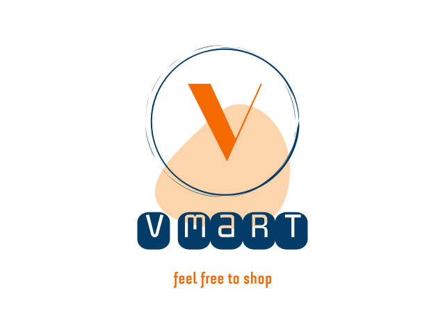

<ion-app>
  <ion-split-pane>
    <ion-menu type="push">
      <ion-header>
        <ion-toolbar class="main-menu">
          <div class="logo-text">
            
          </div>
          <ion-title>User</ion-title>
        </ion-toolbar>
      </ion-header>
      <ion-content class="menu-block">
        <ion-list  lines="none">
          <ion-menu-toggle auto-hide="false" *ngFor="let p of appPages">
            <ion-item [routerDirection]="'root'" [routerLink]="[p.url]">
              <ion-icon slot="start" [name]="p.icon"></ion-icon>
              <ion-label>
                {{p.title}}
              </ion-label>
            </ion-item>
          </ion-menu-toggle>
        </ion-list>
      </ion-content>
    </ion-menu>
    <ion-router-outlet main></ion-router-outlet>
  </ion-split-pane>
</ion-app>
